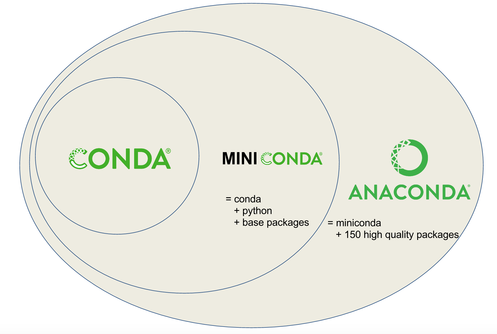
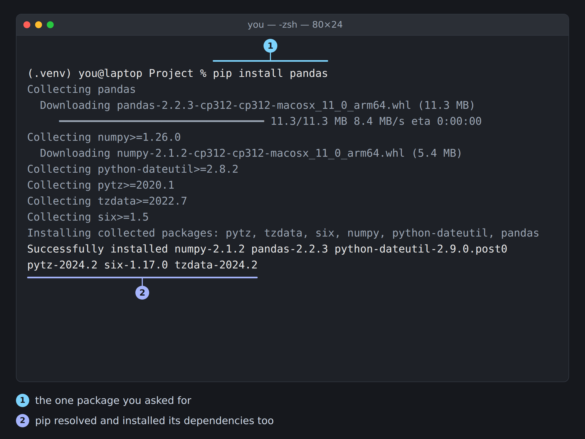

14 Package Management
Prerequisites (read first if unfamiliar): Chapter 11.
See also: Chapter 15, Chapter 16, Chapter 17.
Purpose
It’s the night before a problem set is due, and you need one more library. You type pip install, it prints Successfully installed, and you get on with the assignment. Then you reopen last week’s notebook, the one with all your results in it, and import pandas fails with ValueError: numpy.dtype size changed, may indicate binary incompatibility. You didn’t touch pandas. You didn’t touch that notebook. What happened?
If something like that has happened to you, you’re in good company, and there’s even a name for it: dependency hell. The new library needed a newer NumPy, pip upgraded NumPy to get it, and the older pandas your notebook relied on can’t work with the new NumPy. Nothing was wrong with your code. The trouble was in the pile of other people’s software your code stands on, and in the habit almost everyone starts with: installing everything into one shared Python and hoping for the best.
This chapter is about the habits that end that: a separate environment for every project, a small text file that records what the project needs, and a calm, step-by-step way to untangle a conflict when one happens. It covers both of the tools you’ll meet in data science, conda and pip, and when to use each. It doesn’t go deep on how a virtual environment works under the hood (that’s Chapter 15) or on connecting environments to Jupyter (Chapter 16), though it points to both where they matter.
Why read this chapter
- You ran
pip install pandas, it said it worked, and your notebook still saysModuleNotFoundError: No module named 'pandas'. - You installed one library for this week’s assignment, and a notebook that worked last month now crashes on its first
import. - Pip printed
ERROR: ResolutionImpossibleabove a wall of version numbers, and you couldn’t tell which package was the actual problem. - Your computer’s Python refused with
error: externally-managed-environment, and the advice online was to addsudoor--break-system-packages, which both felt wrong. - A teammate cloned your project and lost an afternoon guessing which packages, and which versions, it needed.
- Your instructor handed out an
environment.yml, and you’re not sure how it differs from arequirements.txtor whether to use conda or pip. - Conda has been “Solving environment” for ten minutes, and you don’t know whether to wait or give up.
Running theme: environments are disposable, projects are not
Your project stays stable because it writes down what it needs, so when an environment breaks, you throw it away and rebuild it in a few minutes instead of nursing it back to health.
14.1 The words you need: packages, dependencies, environments
Most of the confusion around package management comes from a few words used loosely, so it’s worth getting them straight once.
A package is third-party code you install, such as pandas, numpy, or requests. A dependency is another package that your package needs to work: pandas depends on NumPy, and matplotlib depends on Pillow, so installing pandas pulls in NumPy and installing matplotlib pulls in Pillow. Those have dependencies of their own, and a package manager exists to handle the whole tree. The ones you never asked for by name, called transitive dependencies, are behind most of the surprises in this chapter.
Each dependency can come with a version constraint, written with operators like >=, <, ==, and !=. A line like numpy>=1.24,<2.0 means “any version from 1.24 up, but nothing from 2.0 on.” (The exact rules are in the version specifiers spec.) When you install something, the package manager has to find one version of every package that satisfies every constraint at once. That search is called resolving the dependencies, and when no answer exists, you have a conflict.
A Python interpreter is the python program that runs your code, and where it lives decides where packages get installed. An environment is an isolated set of installed packages tied to one interpreter. You can have many on the same computer, one per project, and they don’t interfere with each other, because each has its own interpreter (or a link to one) and its own folder of packages:
# A typical collection for someone a year into data science
~/projects/q3-analysis/.venv/ # one project's venv
~/projects/thesis/.venv/ # another project's venv
~/miniforge3/envs/ds101/ # a conda environment for one course
~/miniforge3/envs/research/ # another conda environmentEnvironments become reproducible when you write down what’s in them, in a small text file you commit alongside your code. Conda’s version of that file is environment.yml; pip’s is requirements.txt. Both list package names and, optionally, version constraints. A stricter kind, a lockfile, records the exact version of every package the resolver chose.
14.2 Choosing tools: conda, pip, and venv
Python has two big package management traditions, and you’ll run into both, often in the same week.
conda comes from scientific computing. It manages Python packages, but also the compiled, non-Python libraries underneath them, system pieces like CUDA for GPUs, and even other languages such as R. That makes it the better choice for projects with heavy compiled dependencies: GPU work, GIS tools, bioinformatics, and scientific libraries that are painful to build yourself. Its resolver also looks at the whole environment at once, which helps with tangled combinations of compiled packages.
You get conda in one of a few bundles (Figure 14.1). Anaconda installs conda, Python, and hundreds of popular libraries at once: the easiest start, but a large install that’s harder to keep up to date. Miniconda installs only conda and Python, and you add what each environment needs: a smaller download that stays easier to maintain. Miniforge, the installer the conda-forge community recommends, is like Miniconda but gets its packages from the community-run conda-forge channel by default (more on channels below). Any of them works on macOS, Windows, and Linux. None installs on a Chromebook or an iPad, and on a managed computer, such as one in a library or computer lab, you usually can’t install one yourself.

conda, miniconda, and Anaconda.
pip is the standard installer that comes with Python, and it installs packages from PyPI, the Python Package Index. Paired with Python’s built-in venv module, it gives you lightweight isolated environments using nothing but what ships with Python. For pure-Python work (most web scraping, most data analysis without exotic libraries), pip and venv are simpler and lighter than conda, and they work much the same on every operating system.
So which should you use? If your course provides a conda environment file, use conda: your instructor has already chosen the channel and the versions. If you need a library that exists only on PyPI (and many do), use pip inside an active environment. And whichever you pick, never install packages globally for coursework. Every project gets its own environment.
14.3 Four habits that prevent most of the pain
A few rules save you from nearly all the package trouble you’d otherwise walk into. None is hard, and skipping them is the most reliable way to lose an afternoon.
Stay out of the base environment. When you install Anaconda, Miniconda, or Miniforge, it creates a default environment called base. That one belongs to conda itself and a few utilities; it’s not where your project’s packages should go. Install things into base and you can break conda’s own machinery, and you’ve lost the isolation between projects. Create a fresh environment for each project and leave base alone.
One project, one environment. It’s tempting to keep one giant “everything I do” environment. Resist. Two projects with different needs will eventually conflict, and untangling a big shared environment is far more work than recreating two small clean ones. Give each a name you’ll recognize later (ds101-week3, housing-audit, thesis-cleaning).
Write it down, don’t remember it. Whatever you install, record it in environment.yml or requirements.txt inside the project. If your install steps live only in your head, the project won’t rebuild on a teammate’s laptop, or on yours in three months, when you’ve forgotten which packages mattered.
Don’t mix conda and pip casually. Using both in one environment works, but it’s fragile, because each tool doesn’t know what the other installed. If you have to mix them, install everything you can with conda first and use pip only for what conda can’t provide. “Mixing conda and pip” below has the details.
14.4 Working with conda
The conda user guide covers every command in depth. What follows is the everyday loop: make an environment, put packages in it, look at what’s there, and share it.
Create and activate an environment
Every conda project starts with a fresh environment and an explicit Python version. Without one, conda picks whatever it considers best today, so the environment you make in September and the one your teammate makes in November differ. And if you create an environment with no packages at all, it has no Python in it, so typing python quietly runs whichever other Python comes next on your computer.
conda create -n housing-audit python=3.12
conda activate housing-auditAfter activation, your prompt should start with the environment’s name in parentheses: (housing-audit) $. If it doesn’t, run conda info --envs, which lists every environment and marks the active one with *. Don’t install anything until you’ve confirmed the right environment is active. Installing into the wrong one, or into base, is how most “it worked yesterday” stories begin.
Install, update, and remove
With the environment active, install packages with conda install. Put several in one command when you can, so the resolver sees all their constraints together, and pin versions with = when you care:
conda install pandas numpy scikit-learn matplotlib
conda install "pandas=2.2" "numpy>=1.26,<2.0"Updating and removing work the same way:
conda update pandas # upgrade one package
conda update --all # upgrade everything (be careful)
conda remove matplotlib # uninstall a packageGo easy on conda update --all: upgrading everything mid-project is a reliable way to break a working environment. Upgrade one package at a time, and only when you have a reason.
Look before you touch
conda list shows every installed package with its version and the channel it came from, and conda search asks your channels which versions exist. Run them before you change an environment:
conda list # everything installed, with versions
conda list pandas # just the pandas row
conda search "pandas>=2.0" # which pandas versions are available
conda info --envs # every environment on this computerChannels, and why you should care
Conda downloads packages from channels, named sources of prebuilt packages. Anaconda and Miniconda start with Anaconda’s own defaults channel; Miniforge starts with conda-forge, a community channel with far more packages and faster updates, where most scientific Python packages live. Mixing channels casually causes conflicts that are hard to read, because the same package (say, NumPy) can exist in both with slightly different builds, and conda has to decide which to prefer every time something else depends on it.
The fix is strict channel priority: tell conda to take a package from your highest-priority channel whenever it’s there, and never mix in a build from a lower one. The conda docs on managing channels explain the rules. To make conda-forge your first choice:
conda config --add channels conda-forge
conda config --set channel_priority strictThese settings go into .condarc in your home folder, so they apply to every environment on your computer. Set them before you create environments: once an environment holds packages from mixed channels, switching to strict priority may mean recreating it. What travels with the project is the channels: list in its environment.yml, described next.
Clean up the cache, carefully
Conda caches downloaded packages so a second environment doesn’t download them again, and over months that cache can grow to several gigabytes. conda clean removes cached downloads and unused packages, but it needs to be told what to remove, and it’s worth a preview first:
conda clean --all --dry-run # preview what would be removed
conda clean --tarballs # remove cached package downloads only
conda clean --all # remove everything cleanableDon’t run conda clean --all right before a demo or deadline: anything conda has to fetch again turns an instant install into a slow one. Clean when you have time to recover.
14.5 Working with venv and pip
venv is Python’s built-in environment tool, so any Python installation can make one without conda. The Python Packaging User Guide’s tutorial on installing packages walks through the same steps as this section, and Chapter 15 explains what a venv actually is on disk.
Create and activate a venv
The convention is to put the environment inside your project, in a folder called .venv, and to list that folder in your project’s .gitignore so you never commit it:
cd housing-audit
python -m venv .venvActivation is the only step that differs by operating system. On macOS and Linux you source a script; on Windows the script depends on whether you’re in PowerShell or the older Command Prompt:
# macOS / Linux (bash, zsh)
source .venv/bin/activate
# Windows PowerShell
.venv\Scripts\Activate.ps1
# Windows Command Prompt (cmd.exe)
.venv\Scripts\activate.batIf PowerShell refuses to run Activate.ps1 with a message about scripts being disabled, that’s its execution policy, and Python’s venv documentation explains how to allow scripts for your user account. Once activation works, your prompt starts with (.venv). To leave the environment, run deactivate.
Check which Python you’re really using
This is the most useful check in the chapter. Activation works by putting the environment’s folder at the front of your PATH, the list of places your shell searches for programs. When something goes wrong, the question is almost always “which Python is actually running?”, and Python can answer it for you by printing sys.executable:
python -c "import sys; print(sys.executable)"
which python # macOS/Linux
where.exe python # WindowsThe path should be inside your project’s .venv folder (or, for conda, inside envs/<name>). If it isn’t, activation didn’t take, and anything you install will land somewhere else. On Windows, type where.exe in full: in PowerShell, plain where is a shortcut for a different command and prints nothing. This check is the first step of nearly every fix below.
Install and record dependencies
Once the venv is active, upgrade pip itself (an old pip can miss prebuilt packages made for newer systems and try to build them from source instead), then install what you need. Always run pip as python -m pip rather than plain pip: that guarantees you’re using the pip that belongs to the Python you just checked, not some other pip that installs somewhere else.
python -m pip install --upgrade pip
python -m pip install pandas scikit-learn matplotlib
python -m pip install "requests>=2.31,<3.0"pip install fails
The two most common failures are “permission denied” and error: externally-managed-environment. Both mean the same thing: pip is trying to install into a Python that belongs to your operating system, which your user account (rightly) can’t change. The fix is never sudo pip install, and not --break-system-packages either, whatever the message’s fine print suggests. The fix is to activate your virtual environment first (source .venv/bin/activate) and install from there, after checking that sys.executable points inside .venv/.
If pip reports ResolutionImpossible above a list of conflicting constraints, you’ve hit a dependency conflict. Don’t start trying versions one at a time: “Dependency conflicts” and “A playbook for conflicts” below walk through what to do. See Chapter 2 if you need to ask for help.
When pip installs something, it installs that package’s dependencies too, and the output shows all of them (Figure 14.2).

pip install pandas. You asked for one package; the Successfully installed line reports six, because pip resolved and installed pandas’s dependencies as well.
Record what you installed in a requirements.txt file so a teammate, or future you, can recreate the environment. The quickest way is pip freeze:
python -m pip freeze > requirements.txtThat writes every installed package, transitive dependencies included, each pinned to its exact version. After installing just pandas, scikit-learn, and matplotlib into a fresh venv in September 2026, the file had eighteen lines:
cloudpickle==3.1.2
contourpy==1.4.0
cycler==0.12.1
fonttools==4.66.0
joblib==1.6.0
kiwisolver==1.5.1
matplotlib==3.11.2
narwhals==2.26.0
numpy==2.5.3
packaging==26.3
pandas==3.0.6
pillow==12.3.0
pyparsing==3.3.3
python-dateutil==2.9.0.post0
scikit-learn==1.9.1
scipy==1.18.1
six==1.17.0
threadpoolctl==3.7.0Three packages asked for, eighteen installed. That’s precise, but it hides which packages you chose, so many projects keep a hand-written requirements.txt instead, listing only the packages they use directly, pinned to versions they know work. Either is fine, as long as the file is committed and updated whenever you install something new.
Recreate an environment from a requirements file
The whole point of requirements.txt is that someone else (or you, on a new computer) can rebuild the environment in three commands:
python -m venv .venv
source .venv/bin/activate # Windows: .venv\Scripts\Activate.ps1
python -m pip install -r requirements.txtIf the install fails partway, resist the urge to install packages one at a time until something works. Read the error, find the package it’s complaining about, and fix its line in requirements.txt. Fixes you make by hand inside a venv that never make it back into the file are how environments quietly stop being reproducible.
Ask pip whether everything fits
Before you trust an environment, ask pip to check that every installed package’s requirements are met, with pip check:
python -m pip checkA healthy environment prints No broken requirements found. Anything else names a package whose dependency is missing or the wrong version. Don’t ignore it: it’ll surface later as a confusing error somewhere else, and fixing it now (usually by upgrading or pinning one package) is much easier than debugging it later.
14.6 Dependency conflicts: what they are and why they happen
Sooner or later pip or conda will refuse to install something, or install it and leave something else broken. The first time, it feels like you’ve wrecked your computer. You haven’t: conflicts are a normal part of depending on other people’s code, and nearly all of them have the same shape.
The shape of every conflict
You ask for package A and package B. A needs some package C in one range of versions, say C>=1.0,<2.0. B needs C in a range that doesn’t overlap, say C>=2.5. No version of C satisfies both, so the resolver gives up and says so. That’s almost every conflict you’ll ever see, boiled down.
What makes it confusing is that C is usually a package you’ve never thought about, deep in the dependency tree. Here’s a real one, from September 2026: asking pip for an older pandas and a current version of the image library OpenCV in the same fresh environment.
$ python -m pip install "pandas==2.2.0" "opencv-python-headless==4.12.0.88"
...
ERROR: Cannot install opencv-python-headless==4.12.0.88 and pandas==2.2.0 because these package versions have conflicting dependencies.
The conflict is caused by:
pandas 2.2.0 depends on numpy<2 and >=1.26.0; python_version >= "3.12"
opencv-python-headless 4.12.0.88 depends on numpy<2.3.0 and >=2; python_version >= "3.9"
...
To fix this you could try to:
1. loosen the range of package versions you've specified
2. remove package versions to allow pip to attempt to solve the dependency conflict
ERROR: ResolutionImpossible: for help visit https://pip.pypa.io/en/latest/topics/dependency-resolution/#dealing-with-dependency-conflictsYou asked about pandas and OpenCV, and the error is about NumPy. That’s C. pandas 2.2.0 needs a NumPy below 2; this OpenCV needs one at 2 or above. (The python_version parts just say which Python the rule applies to.) NumPy is at the bottom of so many of these because NumPy 2.0, released in June 2024, was its first major release since 2006, and packages built for NumPy 1 and packages built for NumPy 2 spent a long while not fitting together.
What it looks like from your side
Conflicts show up in three ways, and only the first is obvious.
The install fails outright. Pip prints ResolutionImpossible as above. Conda says Could not solve for environment specs (with the solver conda uses by default today, the error is named LibMambaUnsatisfiableError; older installs say UnsatisfiableError) and draws a tree of the packages that can’t be installed together. This is the good case, because nothing changed.
An import fails after an install that “worked.” Pip only resolves the packages in the command you’re running. If an install upgrades a shared dependency, it doesn’t go back and check that everything already in the environment still fits. It does warn you, though, in a message that’s easy to scroll past:
ERROR: pip's dependency resolver does not currently take into account all the packages that are installed. This behaviour is the source of the following dependency conflicts.
pandas 2.2.0 requires numpy<2,>=1.26.0; python_version >= "3.12", but you have numpy 2.2.6 which is incompatible.
Successfully installed numpy-2.2.6Note the last line: it still says Successfully installed. The next import pandas then fails with ValueError: numpy.dtype size changed, may indicate binary incompatibility, which is the story from the start of this chapter. pandas contains compiled code built against NumPy 1, and that compiled code doesn’t match NumPy 2’s binary interface. The error names NumPy’s internals, not the install that caused it.
Something fails at run time. Everything imports, the code starts, and then a TypeError or ValueError appears from deep inside a library because two packages disagree about how an object works. This one looks like a bug in your code and is really a version mismatch, which is why pip check belongs in your routine.
14.7 A playbook for conflicts
When a conflict appears, the worst thing you can do is fire off install commands, upgrading this and reinstalling that, until something seems to work. That ends in an environment that installed but is half broken, with each command making the next diagnosis harder. Work through these steps instead.
Step 0: stop making it worse. Don’t run another install. Copy the whole error into a text file: every line, including the list of conflicting constraints. It’s the most useful clue you have, and it’s maddening to realize you scrolled past it three commands ago.
Step 1: check you’re in the right environment. A surprising number of “conflicts” are really installs into the wrong environment. Run the check from “Check which Python you’re really using” (python -c "import sys; print(sys.executable)"), and for conda, conda info --envs. If the path isn’t your project’s environment, activate the right one and try again. You may not have a conflict at all.
Step 2: shrink the problem. Find the smallest set of packages that still fails, rather than retrying your whole requirements list. If A and B fail together but each installs fine alone, the conflict is between A and B, and you’ve narrowed the search a lot. When you do install, name everything in one command, so the resolver weighs all the constraints together. With pip this matters doubly, because, as you just saw, a second pip install doesn’t recheck the packages the first one installed:
# Riskier: the second command can quietly break the first
python -m pip install pandas
python -m pip install scikit-learn
# Better: one command, so pip resolves both together
python -m pip install pandas scikit-learnStep 3: read the resolver’s explanation. Both tools explain conflicts in readable terms, so read slowly. You’re looking for two things: which shared package is contested, and which of the packages you asked for are pulling it in opposite directions. In the example above, NumPy is contested, and pandas 2.2.0 and OpenCV 4.12 are pulling. Pip’s page on dependency resolution has more on reading these messages.
Step 4: choose a way out. There are five, and one of them almost always works. (Before committing to one, pip install --dry-run shows what pip would install without installing anything; the worked example “Untangling a real conflict” uses it.)
- Pin a compatible version of one of the packages you asked for: an older release that accepts the other’s range. Here, an OpenCV from before 4.12 still accepts NumPy 1.
- Relax a constraint you don’t need. If you pinned
pandas==2.2.0for no particular reason, loosen it ("pandas>=2.2") and let the resolver pick a pandas that works with NumPy 2. - Change channels (conda only). If an environment mixes
defaultsand conda-forge packages, rebuilding it with strict conda-forge priority often makes the conflict disappear, because the channels’ builds differ. - Split environments. Sometimes two tools really can’t live together, such as two GPU libraries built for different CUDA versions. Then the answer is two environments, one per tool, and a pipeline that runs each step in the right one.
- Recreate the environment from scratch. Once an environment has been upgraded, downgraded, and patched with pip on top of conda, the fastest fix is often to delete it and rebuild from the spec file. You lose nothing if
environment.ymlorrequirements.txtis up to date, and if it isn’t, that’s the real problem to fix.
Step 5: prove it with a smoke test. Don’t take “install succeeded” as proof, because you’ve just seen that it isn’t. Run a smoke test: the smallest thing that exercises the packages that conflicted.
python -c "import pandas, cv2; print(pandas.__version__, cv2.__version__)"
python scripts/smallest_pipeline.pyIf it passes, pin the working versions in your spec file, commit, and write a one-line note in DECISIONS.md saying why the pins exist, so the next time someone asks “why is pandas stuck at 2.2?”, the answer is on record.
14.8 Mixing conda and pip (when you must)
Sometimes the package you need is on PyPI but not on any conda channel. Mixing works, but it’s fragile, because conda and pip each keep their own record of what’s installed, and neither reads the other’s. After you pip install something into a conda environment, a later conda install or conda update doesn’t know about it and may change packages underneath it. On a good day, you get a confusing import error; on a bad day, rebuilding is the only way back.
Anaconda’s own guide to using pip in a conda environment gives the order that keeps the damage down, and it’s short. Start a new conda environment for the project rather than patching a messy one. Install everything conda can provide first, all in one command. Then use pip for the rest, always as python -m pip, so you know it’s the environment’s own pip. And if you later need more conda packages, treat the environment as brittle: add them to the spec file and recreate the environment rather than layering more installs on top.
conda create -n housing-audit python=3.12
conda activate housing-audit
# 1. Everything conda can provide, in one command.
conda install -c conda-forge pandas scikit-learn matplotlib jupyter
# 2. Then pip (run via python -m) for PyPI-only packages.
python -m pip install some-specialty-libraryRecord a mixed environment in a single environment.yml with a pip: section. List pip itself as a conda dependency, then nest the PyPI packages under it. conda env create -f environment.yml installs the conda packages, then runs pip for the rest, in the right order:
name: housing-audit
channels:
- conda-forge
dependencies:
- python=3.12
- pandas=2.2
- scikit-learn
- matplotlib
- jupyter
- pip
- pip:
- some-specialty-library>=0.4,<0.5
- another-pip-only-packageKeep that one file as the single source of truth, and don’t maintain a separate requirements.txt beside it that can drift. If a package under pip: later shows up on conda-forge, move it up into the main list and recreate the environment.
14.9 Pins, constraints, and lockfiles
Every time you write down a dependency, you choose how tightly to hold it, and that decides whether next month’s rebuild matches today’s environment.
Exact pins or ranges
You can pin a package to one version (pandas==3.0.6) or allow a range (pandas>=3.0,<4.0). Each is good at different things.
Exact pins maximize repeatability. Two installs of the same file give the same versions on every computer, which is what you want for a paper’s final results, a homework submission, or any deliverable where “can someone rerun this?” is the point. The cost is that pinned packages don’t pick up bug fixes or security patches until you change the pin.
Ranges let updates in within a window you trust. pandas>=3.0,<4.0 reads “any pandas 3, but not 4.” Many packages follow semantic versioning, or something close to it, where a change in the first number signals changes that can break your code, so capping below the next major version keeps out the riskiest upgrades. The cost is drift: two installs a month apart can produce different versions, and one of them may pick up a broken release.
# requirements.txt, with exact pins for a reproducible deliverable
pandas==3.0.6
numpy==2.5.3
scikit-learn==1.9.1
matplotlib==3.11.2
# or with ranges, for an environment you're still developing in
pandas>=3.0,<4.0
numpy>=2.0,<3.0
scikit-learn>=1.9,<1.10
matplotlib>=3.11,<4.0For student work, exact pins are usually the right default, especially for homework, thesis chapters, and code that goes with a report. Over-pinning costs you an edit when you need an update. Drift the night before a deadline costs far more.
Constraints files
Pip draws a useful line between “what to install” and “which versions are allowed.” requirements.txt says what to install. A constraints file says which versions are allowed for any package that ends up installed, including transitive dependencies you never asked for by name. That’s exactly what you need when a package you don’t even import is the one causing trouble:
# requirements.txt: what you actually use
pandas
requests
# constraints.txt: limits on anything that gets pulled in
numpy<2.0
urllib3<2.0
# install with both
python -m pip install -r requirements.txt -c constraints.txtIn September 2026, that command chose numpy-1.26.4 and urllib3-1.26.20; without -c constraints.txt, it chose NumPy 2 and urllib3 2. Most student projects never need a constraints file. When a dependency you don’t import is breaking everything, it’s the right tool.
Lockfiles
A lockfile records the exact version of every package the resolver chose, transitive dependencies included, and sometimes a checksum of each file. A tool generates it after resolving, so installing from it is fast and predictable, and two collaborators installing the same lockfile get the same versions months apart. That ends “it resolved differently on my machine.”
For conda, conda-lock makes lockfiles for each operating system from one environment.yml. For pip, pip-tools turns a short requirements.in into a fully pinned requirements.txt with pip-compile, and Poetry, Pipenv, and uv (the tool in this chapter’s meme, a much faster installer whose uv pip install works like pip install) each have their own lockfile format. For coursework, a requirements.txt with exact pins is usually enough. Know the idea, so you recognize it when a course or lab adopts one.
14.10 Keeping an environment healthy over time
Environments age: new versions come out, security advisories appear, and a library you tried once is still sitting there a semester later. A little routine keeps that from turning into a crisis.
Update on purpose
Every upgrade risks a small break (a renamed function, a changed default, a stricter type check), and many upgrades at once multiply that risk. So before you update, ask why: a security advisory, a bug fix you need, a new feature, or just “it’s been a while”? If it’s the last one, it can probably wait.
When you do update, do it somewhere you can back out of: a fresh environment, on a branch (see Chapter 31). Install the upgrade there and run your tests before you touch the environment you rely on. If something breaks, delete the test environment and carry on with the old one while you investigate. Upgrading in place and then finding a break can leave you with no working environment at all.
# Safer upgrade: a branch plus a throwaway environment
git switch -c try-pandas-upgrade
conda env remove -n housing-audit-test 2>/dev/null || true
conda env create -n housing-audit-test -f environment.yml
conda activate housing-audit-test
conda update pandas
python scripts/smoke_test.py
pytestIf the smoke test and your pytest tests pass, merge the branch and update the spec file. If they fail, you have something to investigate and nothing broken.
A five-minute audit
Once a month, or at the start of a new milestone, check what’s installed and whether any of it has gone wrong:
python -m pip check # any unmet or broken requirements?
conda list # every package and version (or: python -m pip list)Compare the list with your spec file to spot drift. And keep it short: every package is something that has to keep working, and every one you remove is one less source of conflicts. The library you imported once for an experiment you’ve since deleted doesn’t belong anymore.
Foot-guns worth knowing
A handful of habits cause most “my environment is broken” emails, and everyone picks up at least one early on.
Installing outside an environment. You open a new terminal, forget to activate, and type pip install pandas. That pandas lands in some system or user-wide Python, and now there’s a pandas that might be the one your project uses, depending on which python you happen to run. Activate first, check sys.executable, then install.
Reaching for pip install --user. It installs into a per-user folder shared by every project on your computer: exactly the global mess environments exist to prevent. Inside an active venv, pip refuses anyway (ERROR: Can not perform a '--user' install. User site-packages are not visible in this virtualenv.).
Trusting “it works on my machine.” If the only place your project runs is your laptop, it works today, there. Test rebuilding from the spec file now and then, and treat the file, not the environment, as the thing that matters.
14.11 Troubleshooting
Most package problems students hit are one of these four.
“ModuleNotFoundError: No module named ‘pandas’”
You know you installed pandas, and Python says it isn’t there. This is the most common package problem students have, and it’s almost always one of two things: pandas went into a different environment than the one running your code, or your editor or notebook is using a different Python than your terminal.
python -c "import sys; print(sys.executable)"
python -m pip show pandasIf sys.executable isn’t inside your project’s environment, activate the right one and try again. If pip show says WARNING: Package(s) not found: pandas, this Python really doesn’t have it, so install it here. If the problem only happens in Jupyter, the notebook’s kernel is probably attached to another Python; the worked example below shows how to tell, and Chapter 16 shows how to fix it.
“It installed, but now something else broke”
A new install worked, and then something that imported fine yesterday fails. Almost always, the install moved a shared dependency that something else needed at its old version (the second symptom in “What it looks like from your side”). Run python -m pip check, which names the package whose requirement broke; for the pandas-and-NumPy break above, it said pandas 2.2.0 has requirement numpy<2,>=1.26.0; python_version >= "3.12", but you have numpy 2.2.6. Then either put the shared package back to a version that fits (python -m pip install "numpy<2") or, often faster, recreate the environment from your spec file.
Conda is slow, or “Solving environment” fails
Conda used to be notorious for sitting at “Solving environment” for many minutes. Since version 23.10 (November 2023), conda has used the much faster libmamba solver by default, so a long solve on a modern install usually means a genuinely hard problem: too many channels in play, or a mix of channels that makes conda compare builds for every package. Check both:
conda config --show channels
conda config --set channel_priority strictIf your conda is older than 23.10, updating conda is worth doing; failing that, you can switch an old install to the new solver:
conda install -n base conda-libmamba-solver
conda config --set solver libmambaA solve that fails rather than dragging usually means a real conflict: shrink the request, as in the playbook, and read conda’s tree of incompatible packages closely.
Pip seems stuck (“This could take a while”)
Sometimes pip prints INFO: pip is looking at multiple versions of <package> to determine which version is compatible with other requirements. This could take a while. and then keeps going for a long time. That’s backtracking, a trial-and-error search named after the general technique: pip tries one combination of versions, finds a clash, backs up, and tries another. With loose constraints, pip may consider many versions of many packages, and the search balloons. If it drags on, pip adds INFO: This is taking longer than usual. You might need to provide the dependency resolver with stricter constraints to reduce runtime.
The fix is to give pip less to search. Pin your top-level packages (pandas==3.0.6), or add a constraints file that caps the dependency it keeps revisiting (numpy<2.0). If pip is still backtracking after that, delete .venv, start clean, and install in the smallest groups that resolve.
14.12 Stakes and politics
In March 2024, an engineer noticed that SSH logins on a test machine were taking half a second too long. The cause was a backdoor in XZ Utils, a compression library found on almost every Linux system, planted by someone who had spent two years earning the trust of its one exhausted volunteer maintainer. Every pip install rests on the same kind of supply chain.
Who maintains the packages you depend on? The scientific Python stack (pandas, NumPy, scikit-learn, matplotlib) is maintained by a fairly small number of people, many of them volunteers, many concentrated in a few well-funded universities and US or European tech companies. When a maintainer burns out or moves on, releases and security fixes slow down for everyone downstream. A backdoor is the extreme case; the ordinary one is a library your project needs that quietly stops getting releases.
Who profits from the registry? Anaconda, Inc.’s default conda channels are free for individuals but require a paid license for many larger organizations, which most students don’t know the first time they run conda install. PyPI and conda-forge are run by nonprofits and volunteers, while big cloud providers sell mirrors of them as paid services. And which packages exist at all? PyPI is overwhelmingly English-language and weighted toward the problems of wealthy countries; language tools for low-resource languages, workflows for intermittent connectivity, and accessibility get less attention because the people writing packages aren’t the people who need them.
See Chapter 8 for the broader framework. The concrete prompt to carry forward: when you pip install, you are downloading code that someone wrote, that someone hosts, and that someone audits. None of those someones are required to keep doing it for free.
14.13 Worked examples
A clean conda environment for a new project
You’re starting an analysis that needs pandas, scikit-learn, matplotlib, and Jupyter. Here’s the whole loop:
# Create the environment with Python and the packages in one command
conda create -n housing-audit python=3.12 "pandas=2.2" numpy scikit-learn matplotlib jupyter
conda activate housing-audit
# Confirm this environment's Python is the one running, not base's
python -c "import sys; print(sys.executable)"
# Record what you asked for, then delete the prefix: line
conda env export --from-history > environment.ymlThe printed path should end in envs/housing-audit/bin/python (on Windows, envs\housing-audit\python.exe). Commit environment.yml. On another computer, conda env create -f environment.yml followed by conda activate housing-audit rebuilds it. That’s the entire reproducibility loop.
pip and a venv for a small script
For a small scraping script, venv and pip are all you need:
mkdir tiny-script && cd tiny-script
python -m venv .venv
source .venv/bin/activate # Windows: .venv\Scripts\Activate.ps1
python -m pip install --upgrade pip
python -m pip install requests beautifulsoup4
python -m pip freeze > requirements.txt
echo ".venv/" > .gitignoreCommit requirements.txt and .gitignore; the .venv/ folder stays out of git. Then run a one-line smoke test:
python -c "import requests, bs4; print(requests.__version__, bs4.__version__)"In September 2026 it printed 2.34.2 4.15.0, and requirements.txt held eight packages, because requests and Beautiful Soup brought six dependencies with them. If both imports succeed, you’re ready to work.
Untangling a real conflict
You need pandas 2.2.0 (a course’s starter code was written against it) and OpenCV for an image-processing step, and pip refuses with the ResolutionImpossible error shown in “The shape of every conflict.” Walk the playbook. Step 1: sys.executable points into the project’s .venv, so it’s a real conflict. Step 3: the contested package is NumPy; pandas 2.2.0 wants numpy<2, and OpenCV 4.12.0.88 wants numpy>=2. Step 4: try both ways out with a dry run before changing anything:
$ python -m pip install --dry-run "pandas==2.2.0" "opencv-python-headless<4.12"
...
Would install numpy-1.26.4 opencv-python-headless-4.11.0.86 pandas-2.2.0 python-dateutil-2.9.0.post0 pytz-2026.4 six-1.17.0 tzdata-2026.4
$ python -m pip install --dry-run "pandas>=2.2" "opencv-python-headless==4.12.0.88"
...
Would install numpy-2.2.6 opencv-python-headless-4.12.0.88 pandas-3.0.6 python-dateutil-2.9.0.post0 six-1.17.0Both resolve. The first keeps the pandas the starter code expects by stepping OpenCV back one release; the second moves to pandas 3, which may mean changing the starter code. Keeping the starter code working is the smaller change, so choose the first, install it for real, and run the smoke test (Step 5):
python -c "import pandas, cv2; print(pandas.__version__, cv2.__version__)"It prints 2.2.0 4.11.0 (after a DeprecationWarning from pandas 2.2 about pyarrow, which you can ignore here). Pin pandas==2.2.0 and opencv-python-headless==4.11.0.86 in requirements.txt, and note why in DECISIONS.md.
A notebook that can’t find pandas
Your terminal imports pandas just fine, but a notebook in the same folder says ModuleNotFoundError: No module named 'pandas'. The notebook is almost certainly running a different Python than your terminal. Find out with one cell:
import sys
print(sys.executable)If the path contains your project’s .venv (or envs/<name>), the notebook is using the right interpreter, and pandas really isn’t installed there, so install it into that environment. If the path is something like /usr/bin/python3 or /opt/anaconda3/bin/python, the notebook’s kernel belongs to another Python, usually because it was set up before your project environment existed. Register your environment as a Jupyter kernel (ipykernel’s instructions) and switch the notebook to it; Chapter 16 covers kernels in detail.
14.14 Templates
Template A: a minimal environment.yml
name: myproj
channels:
- conda-forge
dependencies:
- python=3.12
- pandas
- numpy
- pip
- pip:
- some-pypi-only-packageTemplate B: an environment smoke test
python -c "import sys; print(sys.version)"
python -c "import pandas as pd; print(pd.__version__)"
python -m pip checkTemplate C: a project dependency policy
- Every project has an environment file, committed with the code.
- Nothing gets installed into base or the system Python.
- Installs go through conda (preferred) or pip, and only inside an active environment.
- If the environment breaks, recreate it from the file.
- Before submitting, restart the kernel and run every notebook top to bottom.14.15 Exercises
- Create a new conda environment, install two packages, and export it with
--from-history. Compare the file with a plainconda env export. - Create a new venv, install one package, write
requirements.txt, then delete.venvand recreate it from the file. - In a fresh environment, install two packages whose requirements conflict (the pandas and OpenCV pair from this chapter works). Read the error and name the contested package.
- Fix that conflict by pinning one package, then check your fix with
--dry-runand a smoke test. - Install something with pip in one command, then upgrade one of its dependencies in a second command until pip warns you. Run
pip checkand read what it says. - Make a notebook use the wrong interpreter on purpose (start Jupyter from outside your environment), show the
sys.executablemismatch, then fix it. - Write a short “environment README” for a project: how to create, activate, and check the environment.
14.16 One-page checklist
- I don’t install packages globally, into
base, or into the system Python. - I can create and activate an environment for each project.
- I can confirm which
pythonis running withsys.executable. - I run pip as
python -m pip. - I record dependencies in a file committed with the project.
- I install packages together in one command when I can.
- I can read a resolver’s error and name the contested package.
- I fix conflicts by pinning, relaxing, splitting, or recreating, not by guessing.
- I use conda channels deliberately, with strict priority.
- I run
pip checkand a smoke test before trusting an environment.
14.17 Quick reference: commands students use most
conda
conda create -n NAME python=3.12
conda activate NAME
conda install PKG
conda update PKG
conda env export --from-history > environment.yml
conda env create -f environment.yml
conda env remove -n NAMEpip (inside an environment)
python -m pip install PKG
python -m pip install -r requirements.txt
python -m pip freeze > requirements.txt
python -m pip check
python -c "import sys; print(sys.executable)"- Python Packaging Authority, Python Packaging User Guide — the official guide to pip, virtual environments, and PyPI; trust it over blog posts when the two disagree.
- conda, User guide: Managing environments — the official walk-through of
conda create,activate, andexport, including how to use pip inside a conda environment. - conda-forge, Documentation — the community channel where, in practice, most scientific Python packages are built and maintained for conda users.
- Astral,
uvdocumentation — the fast, Rust-based package and project manager that’s quickly becoming a default; worth knowing about even if you stick with pip or conda. - Python, PEP 668: Marking Python base environments as “externally managed” — why you’ll eventually see
externally-managed-environmentwhen you runpip installon a system Python; the answer is always a virtual environment. - Real Python, How to Install Python on Your System — a friendly, step-by-step guide to installing Python itself on Windows, macOS, and Linux, the step that comes before everything in this chapter.
- Sustain, Sustainable open source — community discussions and reports on the funding and labor behind the packages you install; good context for “Stakes and politics” above.